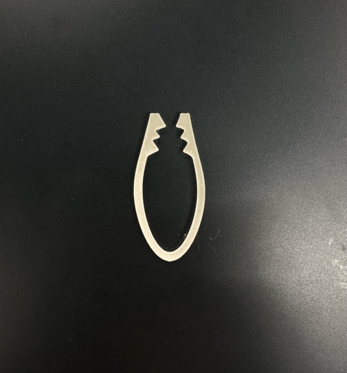
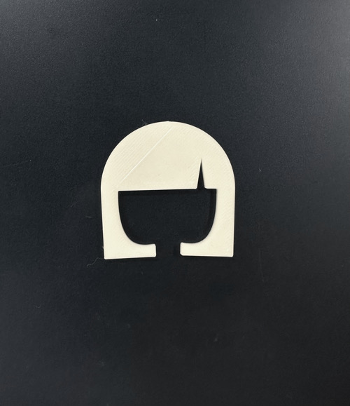
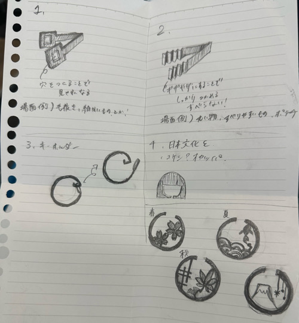

〖ピンセット〗
＜試作品１＞

作品説明
はじめに作った試作品をもとに改良を重ね、先端をギザギザにして掴む際の滑り止めになるようにした。
はじめの試作品は硬くて先端の間も開けすぎいて閉じなかったので、立体の厚みを薄め、先端の距離も縮めた。
感想
失敗から学習でき、改良できたので良かった。
＜試作品２＞

作品説明
日本文化×ピンセットで何か作れないかと考えて、シンプルかつ印象的な“こけし”と
ピンセットを組み合わせることにしました。
感想
可愛らしいものができたと思うが、先端が曲がり切らず、、、。ピンセットとしての機能性に欠けたことが残念だった。
スケッチ

まとめ
スケッチ時に色々と案が出たが、自分自身の技術不足で作るのが難しいものばかりだった。
その中で、機能性重視の作品とデザイン性重視の作品を作ることができて良かったと思う。